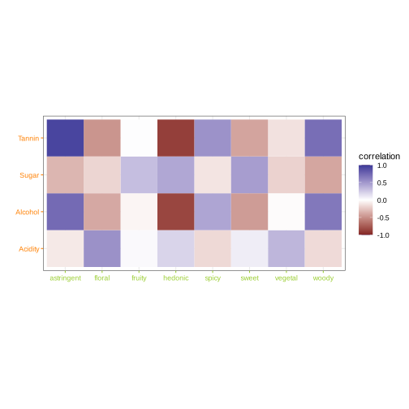
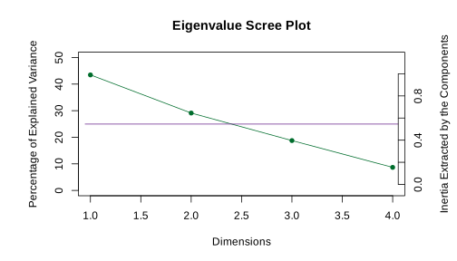
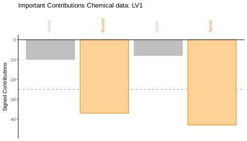
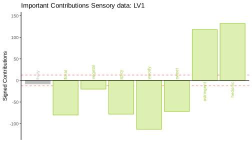
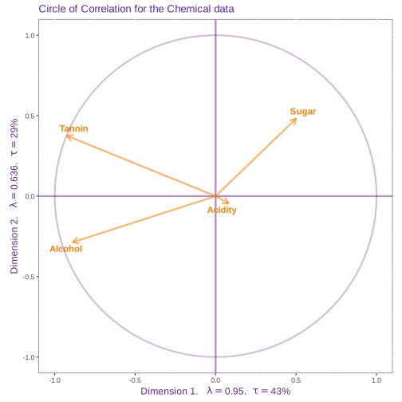
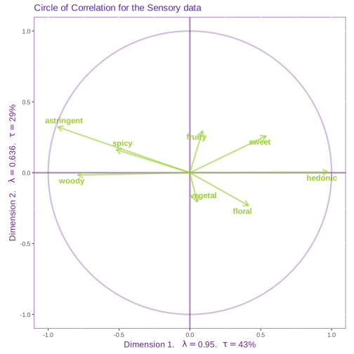

Canonical Correlation Analysis on Wines
Vincent Guillemot, Hervé Abdi, Ju-Chi Yu & Soudeh Ardestani Khoubrouy
Source:vignettes/C2_CCAonWines.Rmd
C2_CCAonWines.RmdLoad the data
With the following command
data("winesOf3Colors", package = "data4PCCAR")More information on the dataset is available on the corresponding vignette: vignette("A3_DataWines").
Two tables with descriptors and other supplementary information
descr <- winesOf3Colors$winesDescriptors %>%
select(origin, color, varietal)
suppl <- winesOf3Colors$winesDescriptors %>%
select(Price)
chemi <- winesOf3Colors$winesDescriptors %>%
select(Acidity, Alcohol, Sugar, Tannin)
senso <- winesOf3Colors$winesDescriptors %>%
select(fruity, floral, vegetal,
spicy, woody, sweet, astringent,
hedonic)Run Canonical Correlation Analysis (CCA) on the two tables
res.cca <- tepCCA(chemi, senso, DESIGN = descr$color, graphs = FALSE)The default of this function will center (to have means equal 0) and scale (to have the sums of squares equal 1) all variables in both data tables. The argument DESIGN indicates the groups of the observations and change how the observations are colored in the figures (when graphs = TRUE), but it does not change the results of CCA.
Generate the figures
## You might need to load these packages if the error is saying that it couldn't find some functions
# library(PTCA4CATA)
# library(data4PCCAR)
res.cca.plot <- TTAplot(
res = res.cca, # Output of tepPLS
color.obs = wineColors, # <optional> colors of wines
color.tab = varColors, # <optional> colors of the two tables
tab1.name = "Chemical data", # <optional> Name of Table 1 (for printing)
tab2.name = "Sensory data", # <optional> Name of Table 2 (for printing)
DESIGN = descr$color, # design for the wines
tab1 = chemi, # First data table
tab2 = senso) # Second data tableIn this TTAplot function, if DESIGN is specified. The latent variables will be colored according to the groups of the observations with the group means and their 95% bootstrap confidence intervals.
Correlation between the two tables
We can check the data by plotting first the correlation matrix between the two data sets. This correlation matrix is where the dimensions are extracted.
res.cca.plot$results.graphs$heatmap.rxy
Scree plot
The scree plot shows the eigenvalues of each dimension. These eigenvalues give the squared correlation (\(R^2\) = 0.9497911) of each pair of latent variables. In other words, the singular values, which are the square root of the eigenvalues, give the correlation (\(r\) = 0.9745723) of these pairs of latent variables. The sum of the eigenvalues is equal to the sum of the squared correlation between all variables in both tables.
res.cca.plot$results.graphs$scree.eig
Latent variables
Here, we plot the first latent variable of both tables against each other with the observations colored according to their groups. This plot shows how the observations are distributed on the dimension and how the chosen pair of latent variables are related to each other. When plotting the first pair of latent variables, we expect the observations to distribute along the bottom-left-to-top-right diagonal line (which illustrates a perfect correlation), because CCA maximizes the correlation of the latent variables.
To examine the stability of these groups, we plot the group means with their 95% bootstrap confidence intervals (or ellipsoids). If the ellipses do not overlap, the groups are reliably different from each other. However, it’s worth noted that the distribution of the observations does not imply how the groups (represented by the group means) are distributed or whether the groups are reliably different from each other.
Note: The grouping information are independent from CCA and are only use to help provide a summary description of the observations.
res.cca.plot$results.graphs$lv.plot
The results from Dimension 1 show that the association between the chemical and the sensory data reliably separates the red wines from rose and white wines.
Contributions
These bar plots illustrate the signed contribution of variables from the two data tables. From these figures, we use the direction and the magnitude of these signed contributions to interpret the dimension.
The direction of the signed contribution is the direction of the loadings, and it shows how the variables contribute to the dimension. The variables that contribute in a similar way have the same sign, and those that contribute in an opposite way will have different signs.
The magnitude of the contributions are computed as squared loadings, and they quantify the amount of variance contributed by each variable. Therefore, contribution is similar to the idea of an effect size. To identify the important variables, we find the variables that contribute more than average (i.e., with a big enough effect size). When the variables are centered and scaled to have their sums of squares equals 1, each variable contributes one unit of variance; therefore, the average contribution is 1/(# of variables of the table).
res.cca.plot$results.graphs$ctrX.plot
res.cca.plot$results.graphs$ctrY.plot
From these two bar plots, the first dimension is characterized by (1) the positive association between Alcohol and Tannin from the Chemical data and Astringent and Hedonic from the Sensory data, and (2) the negative association between these variables and Floral, Vegetal, Spicy, and Sweet from the Sensory data.
Together with the latent variable plot, we found that, as compared to the rose and the white wines in the sample, the red wines are less Hedonic and Astringent but stronger in Alcohol and Tannin and taste more Floral, Vegetal, Spicy, Woody, and Sweet.
Circles of correlations
The circle of correlations illustrate how the variables are correlated with each other and with the dimensions. From this figure, the length of an arrow indicates how much this variable is explained by the two given dimensions. The cosine between any two arrows gives their correlation. The cosine between a variable and an axis gives the correlation between that variable and the corresponding dimension.
In this figure, an angle closer to 0° indicates a correlation close to 1; an angle closer to 180° indicates a correlation close to -1; and an 90° angle indicates 0 correlation. However, it’s worth noted that this implication of correlation might only be true within the given dimensions. When a variable is far away from the circle, it is not fully explained by the dimensions, and other dimensions might be characterized by other pattern of relationship between this and other variables.
res.cca.plot$results.graphs$cirCorX.plot
res.cca.plot$results.graphs$cirCorY.plot
These circles of correlations show that Alcohol, Tannin, Woody, Astringent, and Hedonic are strongly correlated to Dimension 1 with Henodic inversely correlated with all other variables. These variables are mostly explained by the first dimension and have close-to-zero correlation with the second dimension (which is not included and discussed in the previous sections).